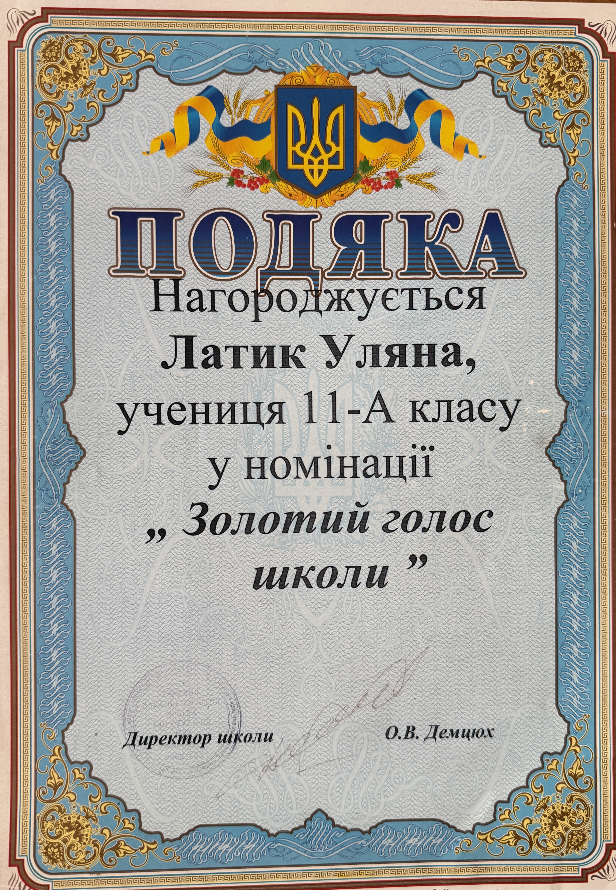

Zolotyi Holos Shkoly Certificate of Appreciation – Uliana Latyk

Basic Information
| Document Type | Certificate of Appreciation |
|---|---|
| Name on Document | Латик Уляна |
| Status | учениця 11-А класу |
| Nomination | «Золотий голос школи» |
| Language | Ukrainian |
Description
This certificate of appreciation records Латик Уляна, a student of 11-А класу, as being recognized in the nomination «Золотий голос школи».
The document identifies О.В. Демцюх as the school director.
The document is preserved in the Ana Danch Archive as an archival record of an early stage in the artistic career of the singer under her birth name, Uliana Latyk.
Archive Information
| Birth Name | Uliana Myroslavivna Latyk |
|---|---|
| Professional Names | Lyana Novak / Liana Novak |
| Current Legal Name | Uliana Myroslavivna Danchul |
| Current Stage Name | Ana Danch |
Credits
| Recipient | Латик Уляна |
|---|---|
| School Director | О.В. Демцюх |
Source Information
| Original Source | Physical certificate of appreciation preserved in the Ana Danch Archive |
|---|---|
| Document Title | Подяка – «Золотий голос школи» |
| Source Language | Ukrainian |
Archive Materials
Notes
The document records the recipient as Латик Уляна. The standardized Latin-script form Uliana Latyk, the later professional names Lyana Novak and Liana Novak, the current legal name Uliana Myroslavivna Danchul, and the current stage name Ana Danch are provided by the Ana Danch Archive as identity context.
The document directly records Uliana Latyk as a student of 11-А класу recognized in the nomination «Золотий голос школи». It identifies О.В. Демцюх as the school director. The visible document does not state the name of the school, an exact date, or a year, so these details are not added to this archival entry.